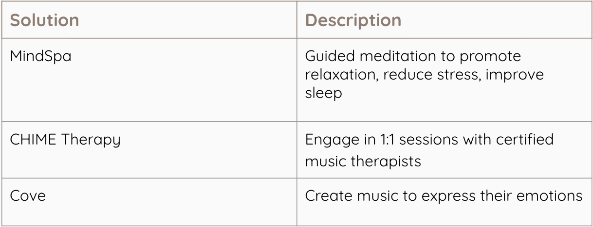
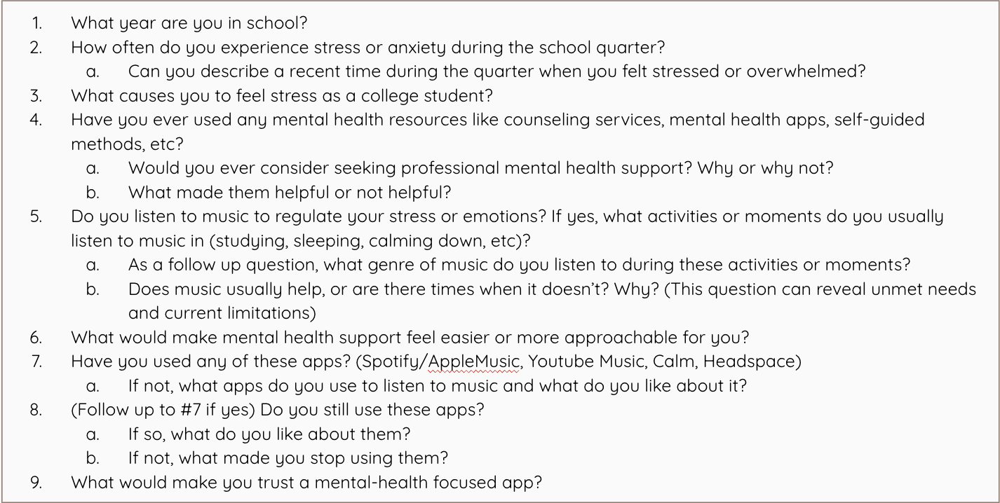
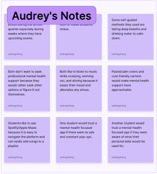
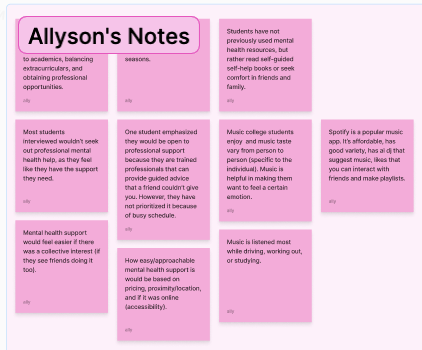
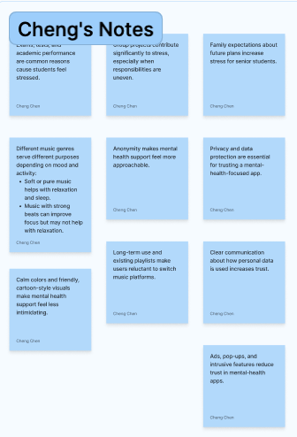
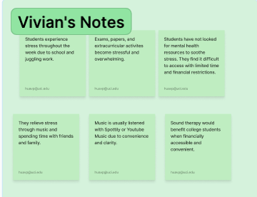
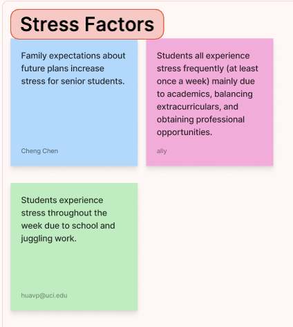
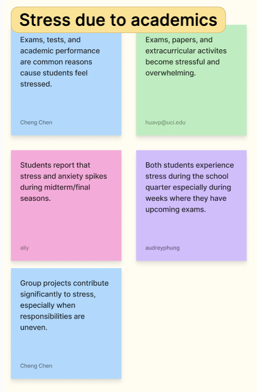
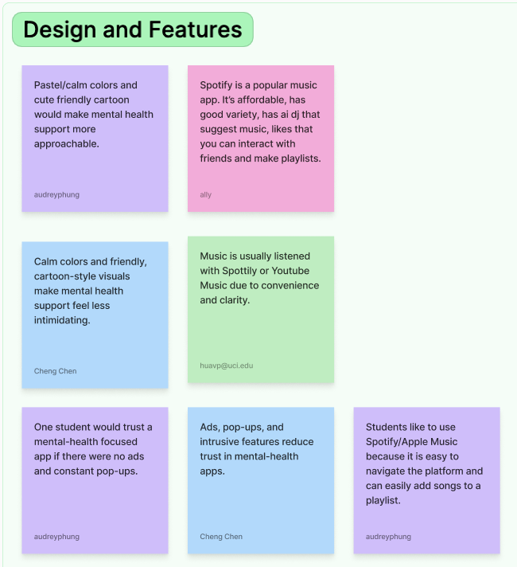
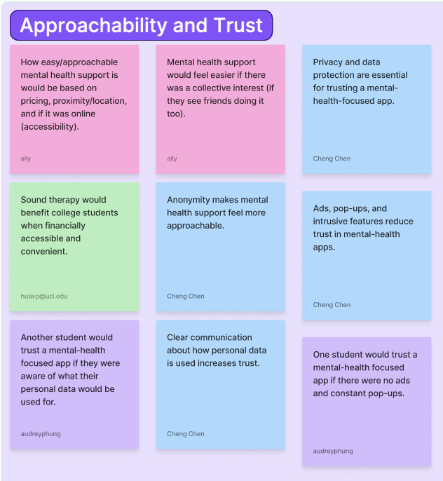

What we discovered · in our research
Background, existing solutions, user research
-U.S. Centers for Disease Control and Prevention (CDC)

Common Theme: Generate revenue through premium subscription plans and paying for other in-app services.






External stress factors include family expectations, balancing academics with extracurriculars, and seeking professional opportunities.

School Stress

Features

Privacy